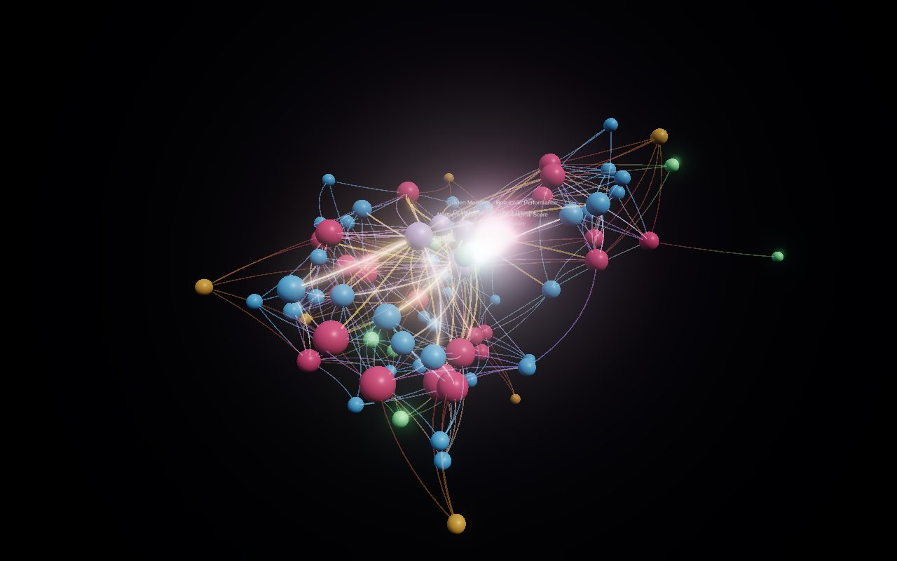
Network views: one dataset, eight libraries
A fictional film-studio catalog (85 nodes / 361 links: studios, films, people, genres, awards) rendered as a force-directed network by eight libraries, plus the SQL-driven original it was built to beat. Everything connects to everything; the question is which library makes that cluster beautiful and readable.
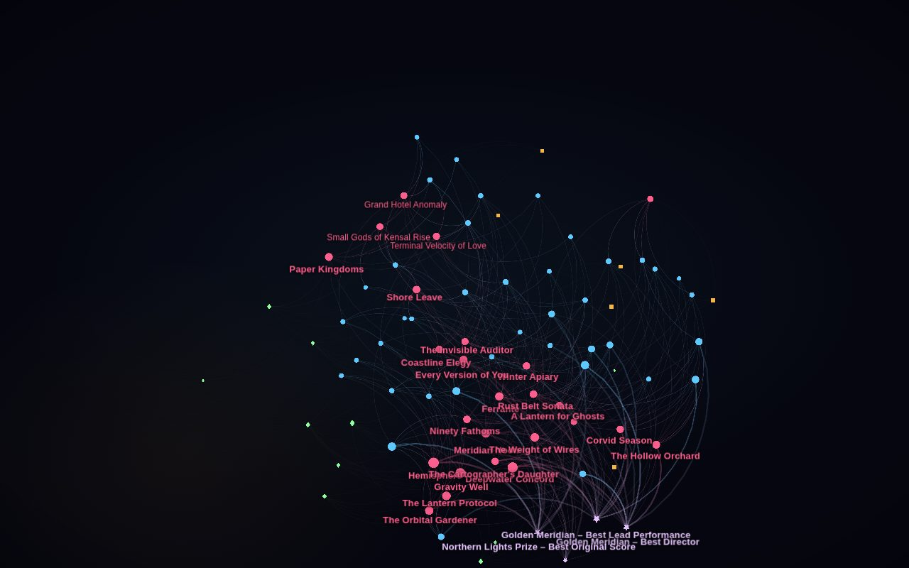
Living Galaxy
cosmos.gl @cosmos.gl/graph 3.4.1
GPU 2D
MIT
medium
A GPU force simulation you can stir with the cursor; curved links, hover rings and GPU colour transitions make it the most alive 2D graph.
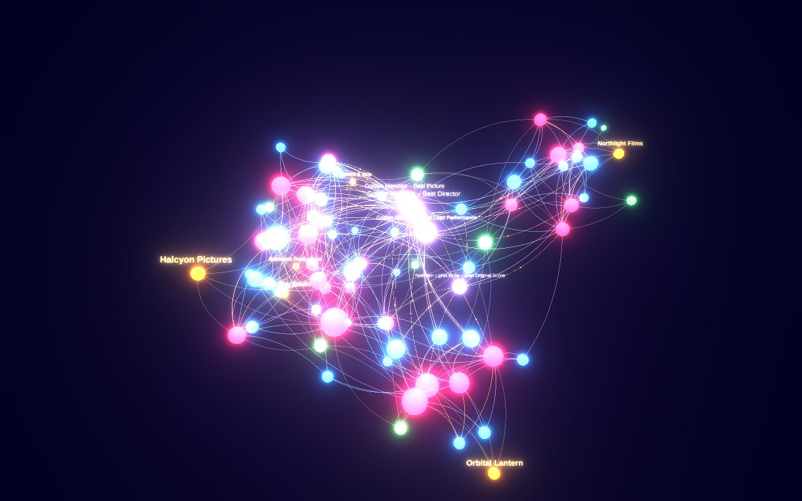
Constellation
3d-force-graph 1.80.0 · three-spritetext 1.10.0
WebGL 3D
MIT
low
Eighty percent of Nebula's wow for a tenth of the code: bloom, directional link particles and camera fly-to, all built in.
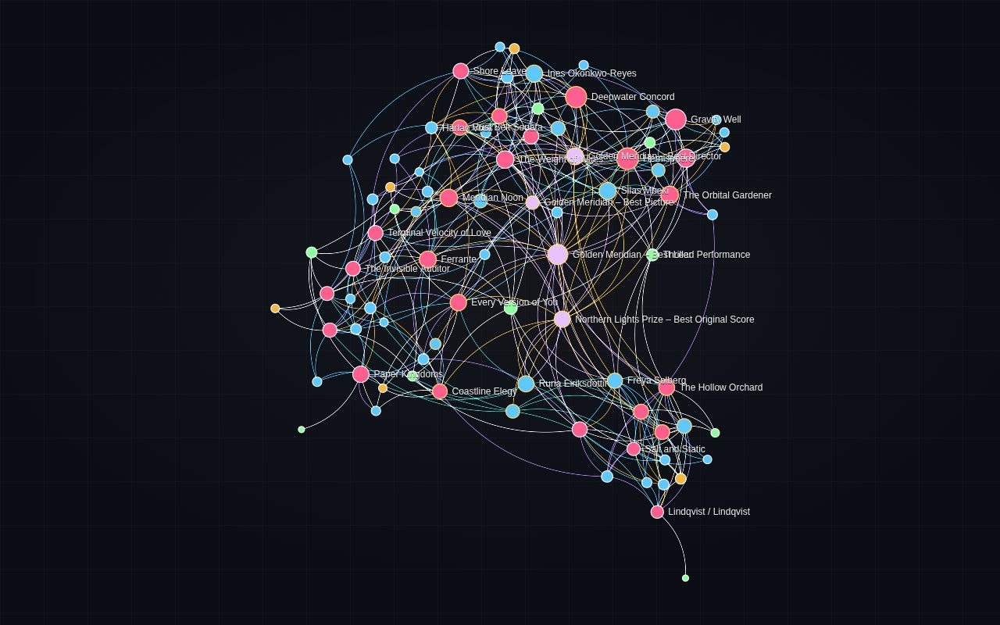
Editorial Dark
Sigma.js 3.0.3 · graphology 0.26.0
WebGL 2D
MIT
medium
Gephi-quality ForceAtlas2 with node halos, curved edges, community colours and hover dimming: the most designed 2D look.
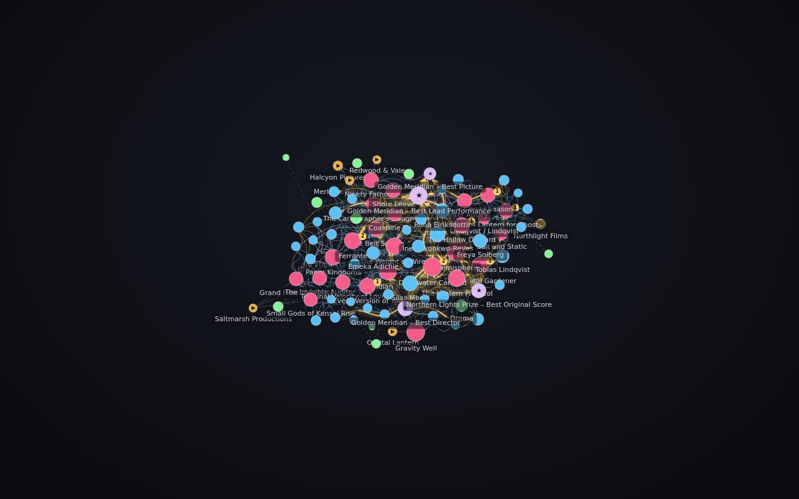
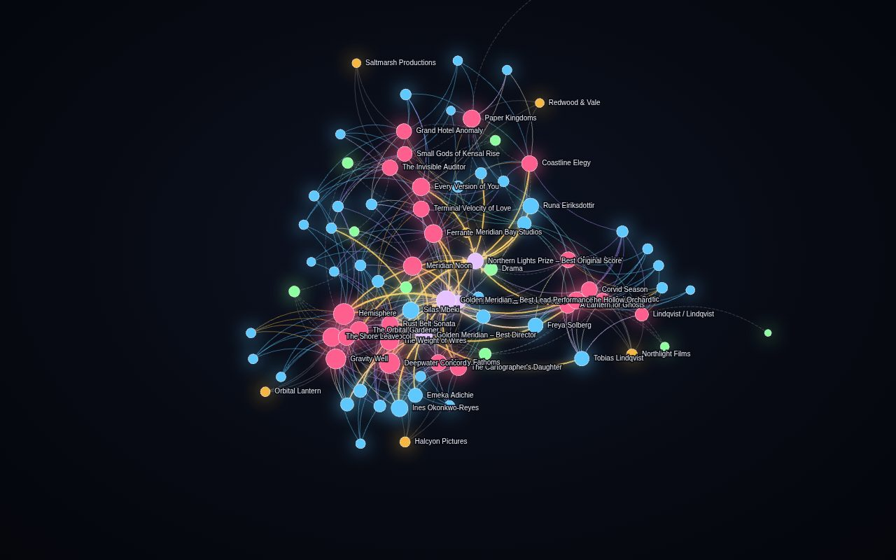
ECharts Neon
Apache ECharts 6.1.0 · echarts-gl 2.1.0
Canvas 2D
Apache-2.0
low
Neon glow and adjacency-focus fade that dashboards love; a graphGL toggle runs GPU ForceAtlas2 on a 50k-node stress set.
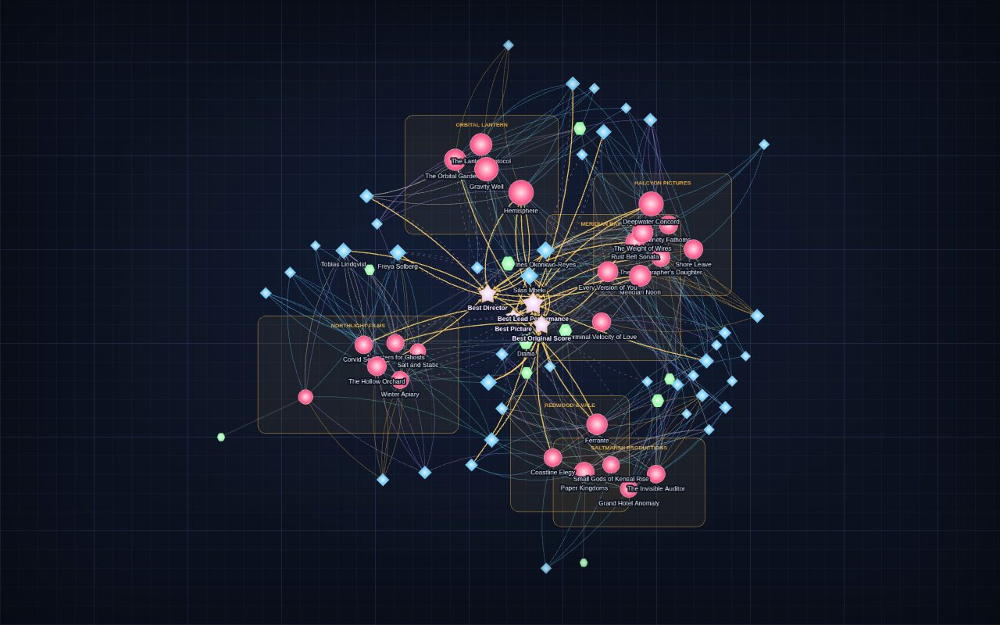
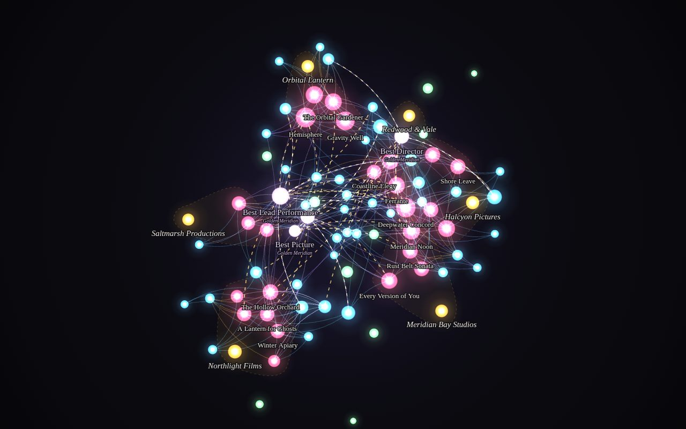
Ink & Neon
D3 7.9.0 (d3-force, d3-zoom, d3-drag)
Canvas 2D
ISC
high
Hand-drawn Canvas: radial gradients, arced edges and a staged entrance animation. Proof of what custom Canvas can do for small graphs.
Studio Graph
3d-force-graph (latest) · sql.js 1.10.3
WebGL 3D
MIT
medium
The SQL-driven original: a real SQLite database in the browser, rendered as a live 3D force graph. Run queries and watch results light up.
Structured views: branches that stay separate
The second dataset is a fictional company, Northwind Labs: the company sits at the root, six departments branch off it, each department owns a few projects, and the projects (and departments) hold typed leaves: skills, agents, templates and tools (189 nodes). Every demo here is a tree, not a force cluster: each department gets its own lane or sector with a visible gap, so you can follow one branch outward without crossing another. Node type is shown three ways (shape, colour, and the legend in the HUD); the department shows as an accent hue on the branch edges. Skills carry a 1–5 level, agents a live / pilot / idea status.
- Separation clarity. Can you tell the six departments apart at a glance and trace one branch to its leaves without crossing another?
- Type legibility. Are shape and colour readable at leaf size, and do skill level and agent status survive?
- Scaling to 1000+ leaves. Radial layouts run out of circumference; lanes scroll; sunbursts thin out; 3D instances but hides labels. Where is collapse/focus required, not just nice?
type
company
department
project
skill
agent
template
tool
department accent
Engineering
Design
Marketing
Sales
Operations
Finance
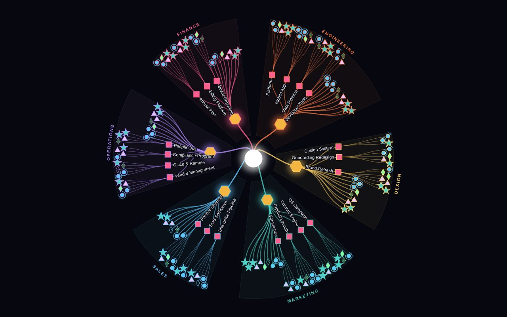
Radial Tree
D3 7.9.0 (d3-hierarchy, d3-shape, d3-zoom)
SVG
ISC
high
Company at the centre, six department sectors with gap wedges between them; typed glyphs on the rim, department-tinted spokes, arc labels, click a branch to collapse it.
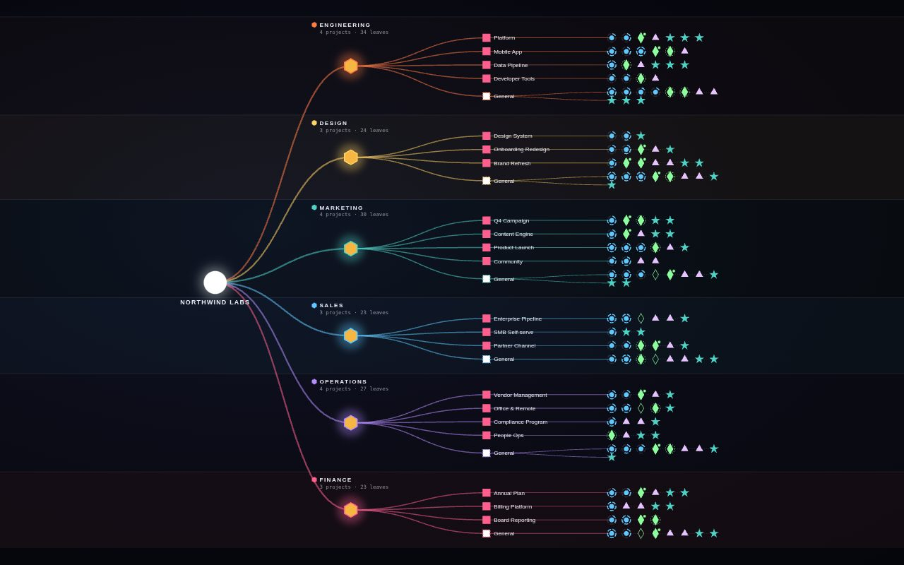
Lanes Skill-tree
D3 7.9.0 (SVG swimlanes, d3-shape, d3-zoom)
SVG
ISC
high
One horizontal lane per department and a left-to-right tech tree inside it: skill level rings, agent status badges, and lanes that grow downward instead of crowding.
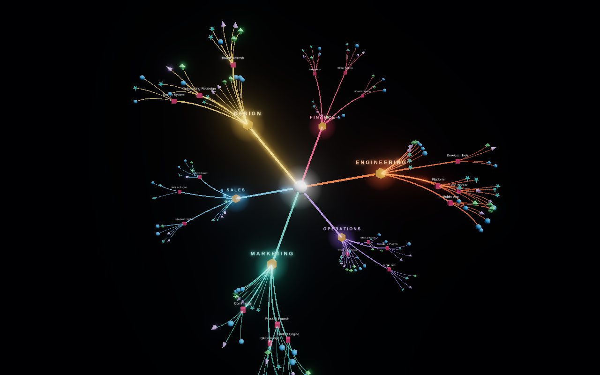
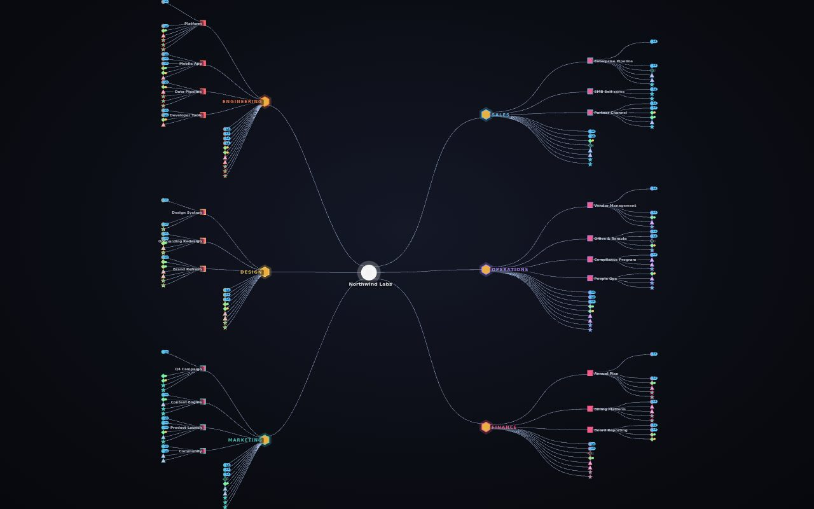
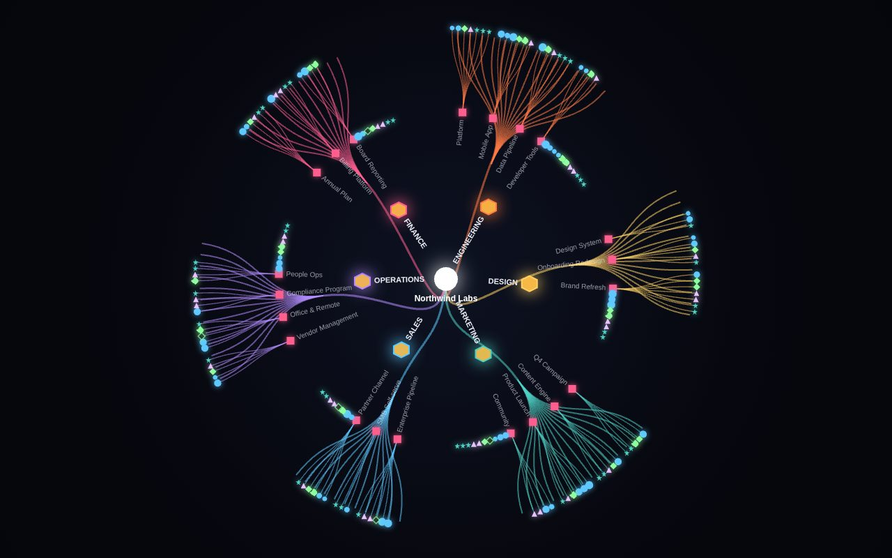
ECharts Radial Tree
Apache ECharts 6.1.0 (series.type tree)
Canvas 2D
Apache-2.0
low
The built-in radial tree with invisible spacer branches to keep angular gaps between departments; per-type symbols, department-tinted lines, and a one-call flip to an orthogonal layout.
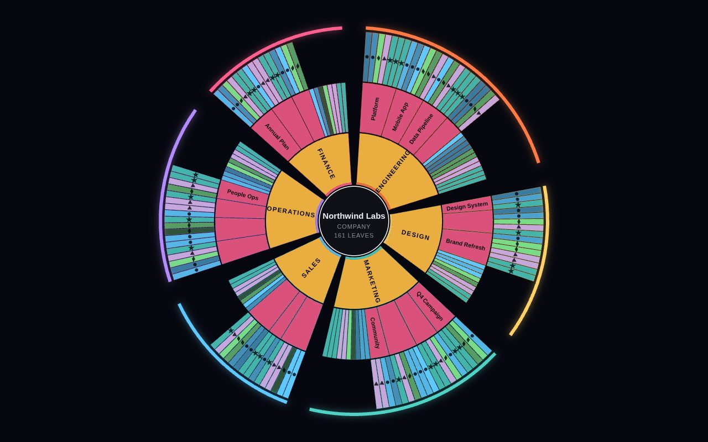